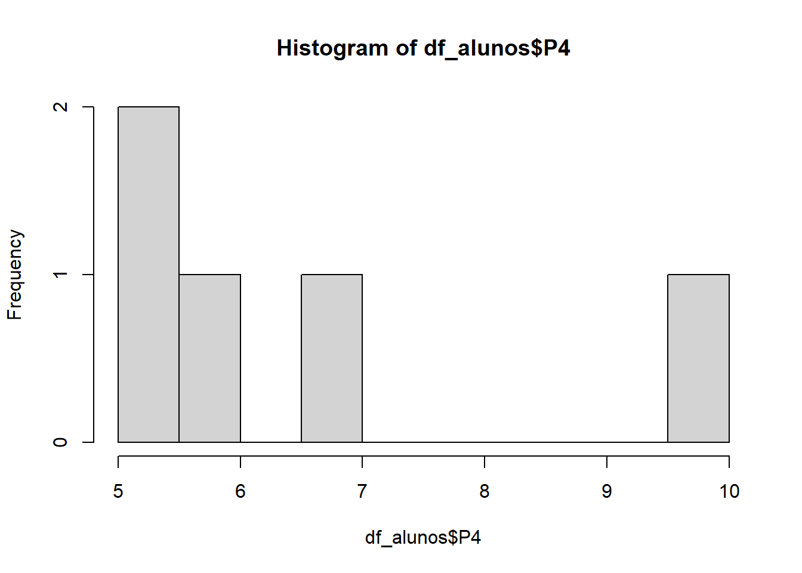

Capítulo 3 Medidas Descritivas
Importante: A partir deste capítulo utilizaremos a função
kabledo pacoteknitrpara visualização de conjuntos de dados. Na prática isto não é necessário, apenas o realizamos para efeitos de visualização.
3.1 Tipos de Variáveis
Antes de analisarmos conjuntos de dados, é necessário termos um conhecimento sobre tipos de variáveis. Para isto, consideremos a seguinte tabela:
nome = c('Djoko','Wilson','Leon', 'Nilce')
est_civil = c('Solteiro','Casado', 'Casado', 'Casado')
escolaridade = c('Pós-graduação',
'Ensino médio completo',
'Pós-graduação',
'Superior completo')
n_filhos = c(0, 0, 0, 0)
salario = c(4500, 3000, 2000, 5500)
idade = c(29, 33, 39, 32)
df_youtubers = data.frame(nome, est_civil, escolaridade, n_filhos, salario, idade)
kable(df_youtubers, align = 'c',
caption = 'Dados sobre Youtubers.') # Melhor visualização dos dados para este PDF| nome | est_civil | escolaridade | n_filhos | salario | idade |
|---|---|---|---|---|---|
| Djoko | Solteiro | Pós-graduação | 0 | 4500 | 29 |
| Wilson | Casado | Ensino médio completo | 0 | 3000 | 33 |
| Leon | Casado | Pós-graduação | 0 | 2000 | 39 |
| Nilce | Casado | Superior completo | 0 | 5500 | 32 |
Variáveis como sexo, escolaridade e estado civil apresentam realizações de uma qualidade ou atributo do indivíduo pesquisado, enquanto outras como número de filhos, salário e idade apresentam números como resultados de uma contagem ou mensuração. Chamamos as do primeiro tipo de qualitativas e as do segundo de quantitativas
Cada uma das duas ainda pode ser dividida em dois tipos:
Variável qualitativa nominal: atributos não apresentam uma ordem lógica;
Variável qualitativa ordinal: atributos apresentam uma ordem lógica bem estabelecida;
Variável quantitativa discreta: dados de contagem, assumem apenas valores inteiros;
Variável quantitativa contínua: dados que podem assumir qualquer tipo de valor.

Muitas vezes queremos resumir estes dados, apresentando um ou mais valores que sejam representativos da série toda. Neste contexto entram às medidas de posição e dispersão.
3.2 Medidas de Posição
Usualmente utilizamos uma das seguintes medidas de posição (ou localização): média, mediana ou moda. Vamos as suas definições:
- A uma variável atribuiremos a letra \(X\) enquanto para seus elementos os valores \(x_1, \dots, x_n\), sendo \(n\) o seu total de elementos.
- Moda: valor mais frequente do conjunto de valores observados.
- Mediana: valor que ocupa a posição central das observações quando estas estão ordenadas em ordem crescente.
- Quando o número de observações for par, usa-se como mediana a média aritmética das duas observações centrais.
Na tabela 3.1 temos a seguinte mediana para a coluna salário:
median(df_youtubers$salario)## [1] 3750- Matematicamente ordenamos os dados do menor para o maior: \(2000, 3000, 4500, 5500\), selecionamos as observações centrais \(3000\) e \(4500\). Por fim, calculamos a média artimética de ambas, \(\frac{3000+4500}{2}\), para obtermos a mediana.
Além disso, podemos calcular a mediana para todas as colunas:
# apply: aplica uma função a um conjunto de dados
# MARGIN = 2: 1 para aplicar a função a todas as linhas e 2 a todas as colunas
# FUN: função a ser aplicada ao conjunto de dados
apply(df_youtubers[, c('n_filhos','salario','idade')], MARGIN = 2, FUN = median)## n_filhos salario idade
## 0.0 3750.0 32.5Média: soma de todos os elementos do conjunto dividida pela quantidade de elementos do conjunto
\[ \overline{x} = \frac{x_1+x_2 + \dots + x_n}{n} \]
Na tabela 3.1 temos a seguinte média para o salário:
mean(df_youtubers$salario)## [1] 3750Podemos calcular para todas as colunas que possuam valores numéricos:
colMeans(df_youtubers[, c('idade', 'salario')])## idade salario
## 33.25 3750.003.3 Medidas de Dispersão
O resumo de um conjunto de dados por uma única medida representativa de posição esconde toda a informação sobre a variabilidade de um conjunto de observações. Consideremos que cinco alunos realizaram cinco provas, obtendo as seguintes notas:
nomes = c('alunoA', 'alunoB', 'alunoC',
'alunoD', 'alunoE')
notas = matrix(c(3,4,5,6,7,
1,3,5,7,9,
2,5,5,5,8,
3,5,5,5,7,
0,0,5,10,10), nrow = 5, ncol = 5, byrow = T)
df_alunos = data.frame(notas, row.names = nomes)
colnames(df_alunos) = c('P1', 'P2', 'P3', 'P4', 'P5')
kable(df_alunos, align = 'c')| P1 | P2 | P3 | P4 | P5 | |
|---|---|---|---|---|---|
| alunoA | 3 | 4 | 5 | 6 | 7 |
| alunoB | 1 | 3 | 5 | 7 | 9 |
| alunoC | 2 | 5 | 5 | 5 | 8 |
| alunoD | 3 | 5 | 5 | 5 | 7 |
| alunoE | 0 | 0 | 5 | 10 | 10 |
Temos as seguintes médias para os alunos:
# Podemos ver a média de cada coluna utilizando colMeans(df_alunos)
rowMeans(df_alunos)## alunoA alunoB alunoC alunoD alunoE
## 5 5 5 5 5Cada aluno possui a mesma média de notas, porém, isto não informa nada sobre a diferença na variabilidade das notas. A partir disto, são criadas medidas que sumarizam a variabilidade de um conjunto de observações.
Uma primeira ideia é considerar a soma das diferença dos dados em relação a média:
\[ x_1 - \overline{x} + x_2 - \overline{x} + \cdots + x_n - \overline{x} \]
Porém, podemos mostrar que em qualquer conjunto a soma destes desvios é igual a zero. Uma alternativa é então adicionar o valor absoluto em cada diferença:
\[ |x_1 - \overline{x}| + |x_2 - \overline{x}| + \cdots + |x_n - \overline{x}| \]
Apesar de possuir uma boa interpretabilidade, tal métrica não possui propriedades matemáticas interessantes. Assim, estatísticos trabalham com a diferença dos dados em relação a média ao quadrado:
\[ (x_1 - \overline{x})^2 + (x_2 - \overline{x})^2 + \cdots + (x_n - \overline{x})^2 \]
Como muitas vezes queremos comparar conjuntos de dados de diferentes tamanhos, realizamos a divisão desta soma pelo total de elementos em uma amostra e a este número chamamos de variância:
\[ \text{var}(X) = \frac{(x_1 - \overline{x})^2 + (x_2 - \overline{x})^2 + \cdots + (x_n - \overline{x})^2}{n} \]
E a partir disto, definimos desvio padrão como sendo a raiz da variância:
\[ \text{dp} = \sqrt{\text{var}(X)} \]
Realizamos isto pois caso os dados estejam em uma certa unidade de medida, como \(cm\) , ao calcularmos a variância passamos a trabalhar com \(cm^2\), o que dificulta a interpretabilidade dos resultados. Utilizando o valor na raiz quadrada, voltamos a trabalhar com a unidade de medida utilizada.
3.4 Quantis Empíricos
Tanto a média como o desvio padrão podem não ser medidas adequadas para representar um conjunto de dados, uma vez que:
São afetados por valores extremos;
Apenas os dois valores não dão informação sobre a simetria ou assimetria da distribuição dos dados
Vimos que a mediana define uma divisão dos dados em duas metades. Além dela existem medidas chamadas de quantil de ordem p ou p-quantil indicado por \(q(p)\) onde \(p\) é uma proporção qualquer, \(0<p<1\) tal que \(100\%\) das observações sejam menores do que \(q(p)\).
Abaixo temos alguns dos nomes dos quantis mais utilizados:
\(q(0.25) = q_1:\) 1° Quartil ou 25° Percentil
\(q(0.50) = q_2:\) 2° Quartil, Mediana ou 50° Percentil
\(q(0.75) = q_3:\) 3° Quartil ou 75° Percentil
\(q(0.40) 1:\) 4° Decil
\(q(0.95):\) 95° Percentil
No R podemos visualizar os quartis da seguinte forma:
quantile(df_alunos$P1)## 0% 25% 50% 75% 100%
## 0 1 2 3 3Em várias colunas:
apply(df_alunos, 2, quantile, seq(0,1,.2))## P1 P2 P3 P4 P5
## 0% 0.0 0.0 5 5.0 7.0
## 20% 0.8 2.4 5 5.0 7.0
## 40% 1.6 3.6 5 5.6 7.6
## 60% 2.4 4.4 5 6.4 8.4
## 80% 3.0 5.0 5 7.6 9.2
## 100% 3.0 5.0 5 10.0 10.03.5 Box Plot
A informação contida nos quantis pode ser confusa quando estamos observando vários conjuntos de dados. A partir disto a traduzimos em um diagrama, qual é chamado de box plot:
Para construção dessa gráfico definimos por intervalo interquartil o valor:
\[ \text{IQ}(X) = q_3 - q_1 \]
Desenhamos um retângulo que parte do primeiro quartil até o terceiro, com a mediana sendo representada por uma linha em seu interior. A partir do retângulo desenhamos uma linha até o maior ponto que não exceta o valor \(q_3+1.5 \cdot \text{IQ}(X)\), chamado de limite superior. De modo análogo fazemos o mesmo procedimento até a parte inferior do retângulo considerando o valor \(q_1 + 1.5 \cdot \text{IQ}(X)\) chamado de limite interior. As observações que estiverem acima do limite superior ou abaixo do limite superior são chamados de pontos exteriores e representadas por asteriscos. Essas observações podem ser chamaas de outliers ou valores atípicos.
Modo simples de como realizar um boxplot pelo R:
boxplot(df_alunos, xlab = "Provas", ylab = "Notas",
main = "Boxplot dos alunos")
O aluno mais atento pode se perguntar: porque alguns dos boxplots não possuem a linha superior e/ou inferior? Isto ocorre quando temos muitos dados em uma mesma categoria, com o primeiro ou terceiro quartil tendo o mesmo valor que o mínimo ou máximo do conjunto de dados:
apply(df_alunos, 2, quantile)## P1 P2 P3 P4 P5
## 0% 0 0 5 5 7
## 25% 1 3 5 5 7
## 50% 2 4 5 6 8
## 75% 3 5 5 7 9
## 100% 3 5 5 10 10O box plot dá uma ideia de posição, dispersão, assimetria dos dados.
hist(df_alunos$P4, breaks = seq(5, 10, 0.5))
3.6 Transformações
Vários procedimentos estatísticos são baseados na posição que os dados possuem uma distribuição em forma de sino (distribuição normal) ou que a distribuição seja mais ou menos simétrica:
# Simula 500 dados de uma distribuição normal
dados_normal <- rnorm(n = 10000)
# Gráfico de suas frequências
hist(dados_normal)
Se quisermos utilizar tais procedimentos podemos efetuar transformações nas observações, de modo a se obter uma distribuição mais simétrica e próxima da normal. As transformações mais frequentemente utilizadas são:
\[ x = \left\{\begin{matrix}&\sqrt{x}\\ &\ln(x) \\&\frac{1}{x}\end{matrix}\right. \]
para cada transformação obtemos gráficos apropriados para os dados originais e transformados, de modo a escolhermos o valor mais adequado de \(p\).
dados_gamma <- rgamma(n = 300, shape = 1)
par(mfrow = c(2,2)) # MultiFrame rowwise layout
hist(dados_gamma)
hist(sqrt(dados_gamma))
hist(1/dados_gamma)
hist(log(dados_gamma))
3.7 Lab 01 - Conjunto de dados Iris
O conjunto de dados Iris é um dos mais utilizados quando introduzimos conceitos de ciência de dados. Este pode ser encontrado em UCI Machine Learning Repository. Tal conjunto consiste de 150 amostras de 4 tipos de espécies de flores distintas contendo os atributos:
SepalLengthCm
SepalWidthCm
PetalLengthCm
PetalWidthCm
Podemos acessá-lo no R sem nenhum carregamento prévio da seguinte forma:
# A função head() mostra os cinco primeiros itens de data.frame:
head(iris)## Sepal.Length Sepal.Width Petal.Length Petal.Width Species
## 1 5.1 3.5 1.4 0.2 setosa
## 2 4.9 3.0 1.4 0.2 setosa
## 3 4.7 3.2 1.3 0.2 setosa
## 4 4.6 3.1 1.5 0.2 setosa
## 5 5.0 3.6 1.4 0.2 setosa
## 6 5.4 3.9 1.7 0.4 setosaHá certas boas práticas ao carregar um conjunto de dados, dentre elas temos:
Visualização de sua dimensão:
# O primeiro valor é a quantidade de linhas do conjunto de dados # e o segundo a sua quantidade de atributos dim(iris)## [1] 150 5Visualização do tipo de cada atributo:
str(iris) # Structure of an Arbitrary R Object## 'data.frame': 150 obs. of 5 variables: ## $ Sepal.Length: num 5.1 4.9 4.7 4.6 5 5.4 4.6 5 4.4 4.9 ... ## $ Sepal.Width : num 3.5 3 3.2 3.1 3.6 3.9 3.4 3.4 2.9 3.1 ... ## $ Petal.Length: num 1.4 1.4 1.3 1.5 1.4 1.7 1.4 1.5 1.4 1.5 ... ## $ Petal.Width : num 0.2 0.2 0.2 0.2 0.2 0.4 0.3 0.2 0.2 0.1 ... ## $ Species : Factor w/ 3 levels "setosa","versicolor",..: 1 1 1 1 1 1 1 1 1 1 ...Sumário de seus atributos:
summary(iris)## Sepal.Length Sepal.Width Petal.Length Petal.Width ## Min. :4.300 Min. :2.000 Min. :1.000 Min. :0.100 ## 1st Qu.:5.100 1st Qu.:2.800 1st Qu.:1.600 1st Qu.:0.300 ## Median :5.800 Median :3.000 Median :4.350 Median :1.300 ## Mean :5.843 Mean :3.057 Mean :3.758 Mean :1.199 ## 3rd Qu.:6.400 3rd Qu.:3.300 3rd Qu.:5.100 3rd Qu.:1.800 ## Max. :7.900 Max. :4.400 Max. :6.900 Max. :2.500 ## Species ## setosa :50 ## versicolor:50 ## virginica :50 ## ## ##
Dessa maneira poderemos contatar valores errôneos no conjunto de dados, distribuições de variáveis categóricas e ter um melhor contato com o conjunto de dados.
Há ainda diversas maneiras de realizarmos visualizações desse conjunto no R, observemos o boxplot da variável Sepa.Length:
boxplot(iris$Sepal.Length)
Observamos que não há presença de outliers, além disso, como a parte debaixo do retângulo separado pela linha que representa a mediana é menor, isto indica que a distribuição dos dados é ligeiramente assimétrica, o qual é confirmado pelo histograma:
hist(iris$Sepal.Length)
ggplot(data = iris, aes(x = Sepal.Length, fill = ..count..)) +
geom_histogram(binwidth = 0.25, boundary = 0) +
scale_x_continuous(breaks = seq(1, 10, by = 0.25)) 
3.8 Lab 02 - Xadrez Brasil
Em 2022 houve uma polêmica no universo de xadrez entre o atual campeão mundial de xadrez Magnus Carlsen e o jovem grande mestre Hanns Niemann, qual possui um histórico de trapaças e foi acusado de repetir estes atos no torneio. Magnus chegou a abandonar o torneio motivado por acreditar que seu oponente utilizava de engines em sua partida.
Baseado nisso vários estatísticos se debrulharam entre as partidas de Niemann com o objetivo de encontrar evidências de sua rápida ascensão no xadrez, qual bateu recordes como grande mestre mais rápido da história.
Uma destas analises foi realizada pelo canal brasileiro de youtube Xadrez Brasil, e nela podemos observar como medidas de posição e dispersão podem ser utilizadas para fortalecer ou não a hipótese de que Niemann estava trapaçeando.
3.9 Projeto 01 - Machine Learning from Disaster
Todo mundo já assistiu, ou pelo menos ouviu falar, sobre o desastre do navio Titanic.
Incrivelmente este caso também pode ser estudado utilizando aprendizado de máquina! Na verdade este é um dos primeiros desafios que trabalhamos quando estudamos nossos primeiros algoritmos. O conjunto de dados e suas informações pode ser encontrado no site Kaggle, um site que hospeda diversos conjuntos de dados e competições de machine learning.
Na aula aprenderemos como baixamos e analisamos as observaçõs contidas nesse conjunto de dados, qual pode ser visualizado na tabela abaixo:
library(readr)
titanic_train <- read_csv("G:/Meu Drive/Dados/titanic_train.csv")## Rows: 891 Columns: 12
## ── Column specification ────────────────────────────────────────────────────────
## Delimiter: ","
## chr (5): Name, Sex, Ticket, Cabin, Embarked
## dbl (7): PassengerId, Survived, Pclass, Age, SibSp, Parch, Fare
##
## ℹ Use `spec()` to retrieve the full column specification for this data.
## ℹ Specify the column types or set `show_col_types = FALSE` to quiet this message.kable(head(titanic_train), align = 'c')| PassengerId | Survived | Pclass | Name | Sex | Age | SibSp | Parch | Ticket | Fare | Cabin | Embarked |
|---|---|---|---|---|---|---|---|---|---|---|---|
| 1 | 0 | 3 | Braund, Mr. Owen Harris | male | 22 | 1 | 0 | A/5 21171 | 7.2500 | NA | S |
| 2 | 1 | 1 | Cumings, Mrs. John Bradley (Florence Briggs Thayer) | female | 38 | 1 | 0 | PC 17599 | 71.2833 | C85 | C |
| 3 | 1 | 3 | Heikkinen, Miss. Laina | female | 26 | 0 | 0 | STON/O2. 3101282 | 7.9250 | NA | S |
| 4 | 1 | 1 | Futrelle, Mrs. Jacques Heath (Lily May Peel) | female | 35 | 1 | 0 | 113803 | 53.1000 | C123 | S |
| 5 | 0 | 3 | Allen, Mr. William Henry | male | 35 | 0 | 0 | 373450 | 8.0500 | NA | S |
| 6 | 0 | 3 | Moran, Mr. James | male | NA | 0 | 0 | 330877 | 8.4583 | NA | Q |
O objetivo do trabalho é prever se um passageiro sobreviveu ou não no naufrágio do Titanic. Para começarmos trabalhando podemos utilizar a função table para observar a distribuição dos passageiros que sobreviveram ao acidente:
table(titanic_train$Survived)##
## 0 1
## 549 342Observar a média de idade entre os passageiros:
mean(titanic_train$Age, na.rm = TRUE)## [1] 29.69912Quais são os tipos de variáveis que eu tenho no conjunto de dados?
str(titanic_train)## spec_tbl_df [891 × 12] (S3: spec_tbl_df/tbl_df/tbl/data.frame)
## $ PassengerId: num [1:891] 1 2 3 4 5 6 7 8 9 10 ...
## $ Survived : num [1:891] 0 1 1 1 0 0 0 0 1 1 ...
## $ Pclass : num [1:891] 3 1 3 1 3 3 1 3 3 2 ...
## $ Name : chr [1:891] "Braund, Mr. Owen Harris" "Cumings, Mrs. John Bradley (Florence Briggs Thayer)" "Heikkinen, Miss. Laina" "Futrelle, Mrs. Jacques Heath (Lily May Peel)" ...
## $ Sex : chr [1:891] "male" "female" "female" "female" ...
## $ Age : num [1:891] 22 38 26 35 35 NA 54 2 27 14 ...
## $ SibSp : num [1:891] 1 1 0 1 0 0 0 3 0 1 ...
## $ Parch : num [1:891] 0 0 0 0 0 0 0 1 2 0 ...
## $ Ticket : chr [1:891] "A/5 21171" "PC 17599" "STON/O2. 3101282" "113803" ...
## $ Fare : num [1:891] 7.25 71.28 7.92 53.1 8.05 ...
## $ Cabin : chr [1:891] NA "C85" NA "C123" ...
## $ Embarked : chr [1:891] "S" "C" "S" "S" ...
## - attr(*, "spec")=
## .. cols(
## .. PassengerId = col_double(),
## .. Survived = col_double(),
## .. Pclass = col_double(),
## .. Name = col_character(),
## .. Sex = col_character(),
## .. Age = col_double(),
## .. SibSp = col_double(),
## .. Parch = col_double(),
## .. Ticket = col_character(),
## .. Fare = col_double(),
## .. Cabin = col_character(),
## .. Embarked = col_character()
## .. )
## - attr(*, "problems")=<externalptr>Por fim, vamos selecionar
kable(summary(titanic_train), align = 'c')| PassengerId | Survived | Pclass | Name | Sex | Age | SibSp | Parch | Ticket | Fare | Cabin | Embarked | |
|---|---|---|---|---|---|---|---|---|---|---|---|---|
| Min. : 1.0 | Min. :0.0000 | Min. :1.000 | Length:891 | Length:891 | Min. : 0.42 | Min. :0.000 | Min. :0.0000 | Length:891 | Min. : 0.00 | Length:891 | Length:891 | |
| 1st Qu.:223.5 | 1st Qu.:0.0000 | 1st Qu.:2.000 | Class :character | Class :character | 1st Qu.:20.12 | 1st Qu.:0.000 | 1st Qu.:0.0000 | Class :character | 1st Qu.: 7.91 | Class :character | Class :character | |
| Median :446.0 | Median :0.0000 | Median :3.000 | Mode :character | Mode :character | Median :28.00 | Median :0.000 | Median :0.0000 | Mode :character | Median : 14.45 | Mode :character | Mode :character | |
| Mean :446.0 | Mean :0.3838 | Mean :2.309 | NA | NA | Mean :29.70 | Mean :0.523 | Mean :0.3816 | NA | Mean : 32.20 | NA | NA | |
| 3rd Qu.:668.5 | 3rd Qu.:1.0000 | 3rd Qu.:3.000 | NA | NA | 3rd Qu.:38.00 | 3rd Qu.:1.000 | 3rd Qu.:0.0000 | NA | 3rd Qu.: 31.00 | NA | NA | |
| Max. :891.0 | Max. :1.0000 | Max. :3.000 | NA | NA | Max. :80.00 | Max. :8.000 | Max. :6.0000 | NA | Max. :512.33 | NA | NA | |
| NA | NA | NA | NA | NA | NA’s :177 | NA | NA | NA | NA | NA | NA |